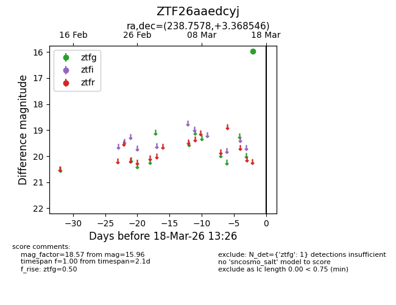
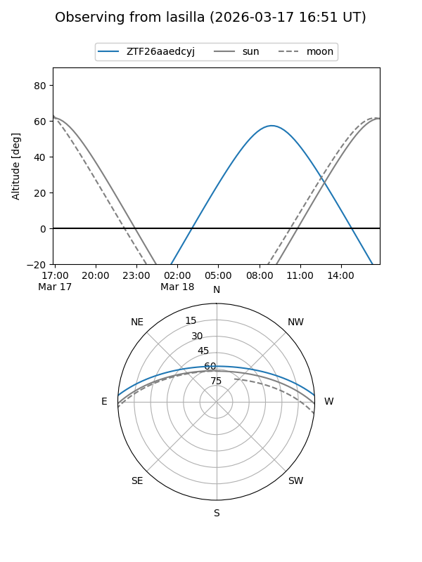
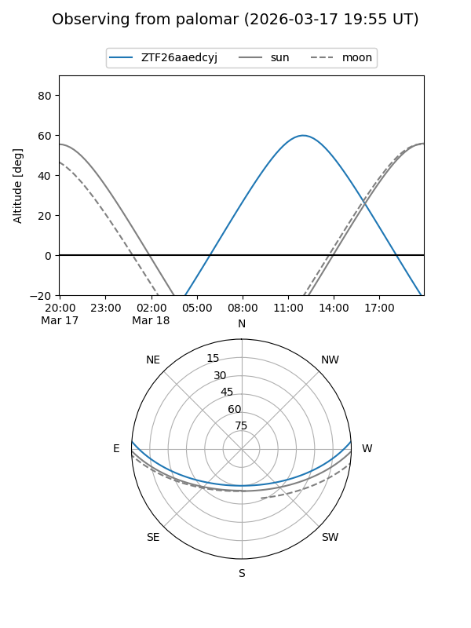

ZTF26aaedcyj
Target ZTF26aaedcyj at 2026-03-18 13:28
Aliases and brokers:
FINK: link
Lasair: link
ALeRCE: link
alt names
ZTF26aaedcyj (ztf,fink_ztf)
Coordinates:
equatorial (ra, dec) = 238.7578,+3.36855
equatorial (HMS+DMS) = 15:55:01.87,+03:22:06.77
galactic (l, b) = (12.6800,+40.17286)
Flags:
Photometry:
last ztfg=15.96
1 ztfg detections
Lightcurve

Visibility


Additional plots